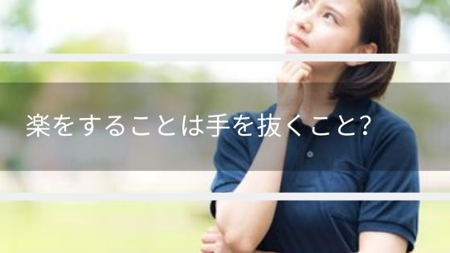

楽をしたい！それって手を抜くこと？
答えは「NO」です。
楽には３つの意味がありますが、今回テーマとしている楽は【３】の楽です。
１ 心身に苦痛などがなく、快く安らかなこと。また、そのさま。「気が―になる」「―な姿勢」「どうぞお―に」
２ 生計が豊かなこと。また、そのさま。「不動産収入で―な暮らしをする」
３ たやすいこと。簡単なこと。また、そのさま。「―な計算問題」「―に勝てる相手」
引用元：goo 辞書
手を抜くというのはやるべきことを100％やらずに中途半端にすることです。
楽をするというのはやるべきことを100%完了させることが簡単だということです。
では楽をしたい場合、どうすればよいのかを書いていきます。
楽をしたい！どうすればいいのか？
楽をするために苦労する
楽をするのに苦労するなんておかしいと思われる方もいると思います。
苦労したほうが楽になる理由を書いていきます。
苦労するといっても気構える必要は全然ないので安心してみていってください。
楽をするために苦労したほうが良い事柄が下のリストの内容になります。
・記憶力を高めること
・漠然としているだけでなくきちんと意識をすること
・経験を積むこと
まず「記憶力を高めること」についてです。
やり遂げる内容は「買い物」を例にしたいと思います。
あなたはカレーを作るために買い物に行きました。
材料は肉、にんじん、ジャガイモ、玉ねぎ、ルーです。
買って帰ってきてカレーを作り始めたときに気が付きます。ジャガイモを買ってないと。
そうなったらもう一度買い物に行く必要がありますよね。2度手間となって1回で全部覚えて買うのに比べて楽でなくなったことがわかります。
このレベルの経験であればほとんどの人が経験されているので「なんだそんなことか」と思うと思います。
そんなことなんですよ。そのそんなことの小さな積み重ねが楽の積み重ねとなっていくのです。
次に「漠然としているだけでなくきちんと意識をすること」についてです。
こちらも先ほどのカレーの「買い物」を例にします。
カレーの材料を買って家に帰りました。いざ作ろうとしたら丁度よい大きさの鍋をもっていませんでした。
今度は鍋を買いにいくので2度手間ですよね。
これはカレーを作ることを考えているときに鍋のことに意識がいっておらず最初の買い物リストに入っていないことが原因です。
カレーを作る買い物に行こうと決めたときに、カレーを作るという意識が足りておらず、ただ漠然と材料を買ってこようとしか思っていなかった。そこを改善できれば楽になっていました。
最後に「経験をつむこと」です。
一度でも経験を積んでいれば、カレーの材料もレシピを見ただけに比べ覚えているし、カレーを作る鍋の大きさもわかっています。
実際に見ているだけなのと1度でも経験することは天と地ほどの差があり、記憶にもよく残ります。
一度もやったことがなくて不安でできないという考えは、楽になるためには捨てたほうが良い考えで、経験を積めば積むほど楽になっていきます。
最終的に楽になればいいという考え方を持つ
カレーの材料を買うとき、材料が覚えられずメモをとったとします。
メモを取らずに買い物にいって何か買い忘れた場合、2回買い物に行くことになります。
メモを取って買い物に行った場合、1回の買い物で済みます。
メモを取る労力だけみるとその1瞬はメモを取らずに買い物に行ったほうが楽になります。
しかし結果はメモを取ったほうが楽でした。こういう話です。
実際はメモを取らなくても1回で買い物が済むときもありますしバランスが大事ですね。
何かやりたいことがあったときに初めは全く楽でないかもしれません。
ただ、早く初めれば初めるほど経験を積んで楽になっていきます。
そうなればこれから初める人に比べて、経験を積んでいた人のほうが明らかに楽になっています。
最終的に楽であれば最初の苦労は安いものなのです。
まとめ
★楽をすることは手を抜くことではない。
★最終的に楽になる方法を考える。
★記憶力を高めてやることに対してちゃんと意識する。
★経験を積むのが一番効果的。
★カレー作りは楽しい。
※「心身が安らか」のほうの楽ではないのでご注意くださいね。
合わせて読みたい